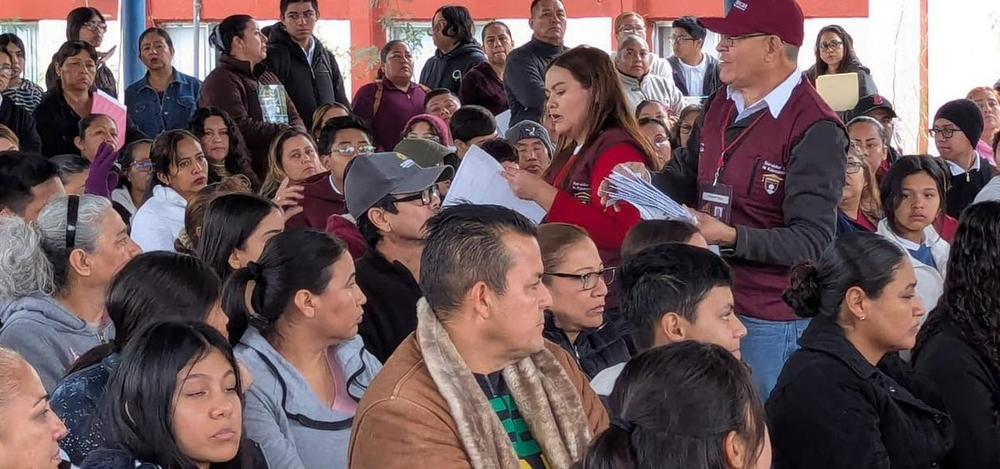
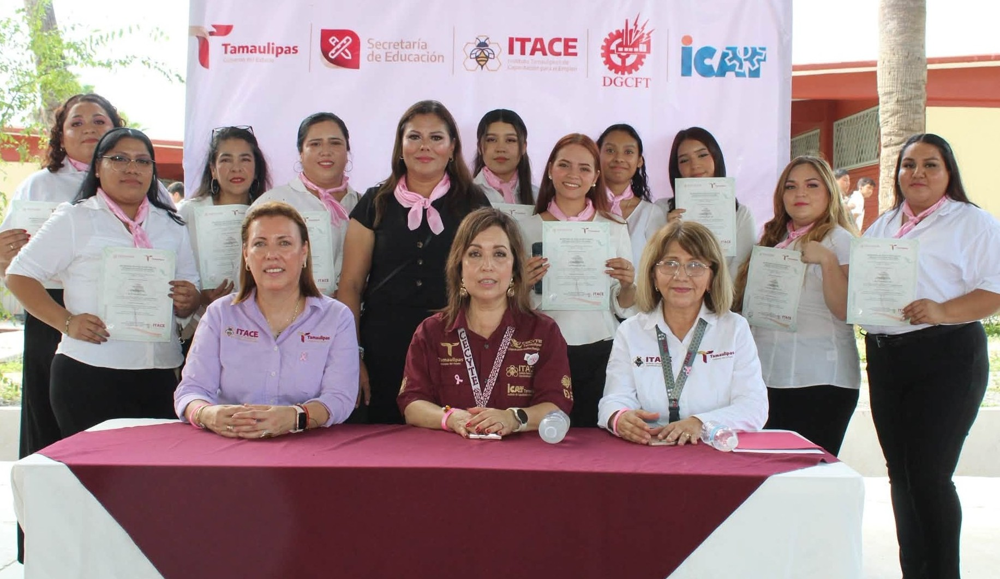

Preinscripción
Consulta las indicaciones de la convocatoria y conoce cómo iniciar tu registro como aspirante.

Plantel Reynosa
INICIA UNA NUEVA ETAPA
Tu futuro comienza con una oportunidad. Conoce cómo ingresar al ITACE Plantel Reynosa y descubre el camino hacia tu formación tecnológica.
Conoce el proceso de ingresoTU FUTURO COMIENZA AQUÍ
El Instituto Tamaulipeco de Capacitación para el Empleo ofrece una formación que combina conocimientos académicos y preparación tecnológica, brindando herramientas para continuar estudiando y desarrollarse en el ámbito laboral.
Si estás por concluir tus estudios de secundaria y deseas conocer las oportunidades que ofrece el Bachillerato Tecnológico, este espacio te ayudará a orientarte sobre los procesos de admisión e inscripción.
Conoce las especialidades disponibles →
Educación tecnológica para construir nuevas oportunidades.
INFORMACIÓN PARA ASPIRANTES
Identifica los principales momentos del proceso para comenzar tu camino en el ITACE.
Consulta las indicaciones de la convocatoria y conoce cómo iniciar tu registro como aspirante.
Revisa los procedimientos, fechas y disposiciones establecidos para el ciclo escolar correspondiente.
Cumple con los requisitos y las indicaciones necesarias para formalizar tu ingreso.
PREPARA TU DOCUMENTACIÓN
De acuerdo con la información institucional publicada para el proceso de preinscripción, se solicita preparar la siguiente documentación:
Organiza tus documentos antes de iniciar el trámite.
Los documentos y condiciones pueden actualizarse. Verifica la convocatoria vigente antes de realizar tu trámite.
FORMALIZA TU INGRESO
Una vez que corresponda realizar la inscripción, el portal institucional señala los siguientes documentos:
Confirma los requisitos, las fechas y las indicaciones vigentes directamente con el personal del ITACE Plantel Reynosa.
PASO A PASO
Conoce una guía general para orientarte durante tu incorporación al plantel.
Revisa la publicación oficial correspondiente al ciclo escolar al que deseas ingresar.
Prepara la documentación indicada y verifica que cumpla con las especificaciones solicitadas.
Comunícate con el Plantel Reynosa para resolver dudas sobre fechas, procedimientos y requisitos.
Sigue las instrucciones oficiales para concluir el proceso de admisión e inscripción.
MANTENTE INFORMADO
Cada ciclo escolar puede contar con fechas, procedimientos y disposiciones diferentes. Consulta las publicaciones oficiales para conocer los periodos de preinscripción, admisión e inscripción.
Consultar información oficial Visitar portal oficial del ITACE →SERVICIOS ESCOLARES
Accede a los recursos institucionales relacionados con los procedimientos escolares.

Consulta los requisitos, documentos e indicaciones publicados por la institución.
Consultar requisitos →
Consulta el apartado institucional relacionado con los servicios de reinscripción.
Consultar servicio →
ESTAMOS PARA AYUDARTE
Si necesitas información adicional sobre los trámites, documentos o procedimientos de admisión, puedes contactar directamente al Plantel Reynosa.
Consultar contacto y ubicaciónITACE PLANTEL REYNOSA
Estos son los datos de contacto del plantel para solicitar orientación sobre los procesos de ingreso.
Calle Octava y Zaragoza No. 515, Colonia Prolongación Las Cumbres, C.P. 88745, Reynosa, Tamaulipas.
899 924 01 84
899 925 24 03
899 925 23 86
EL FUTURO ESTÁ EN TUS MANOS
Conoce las especialidades, desarrolla tus habilidades y comienza una nueva etapa en el ITACE.
Explorar oferta educativa